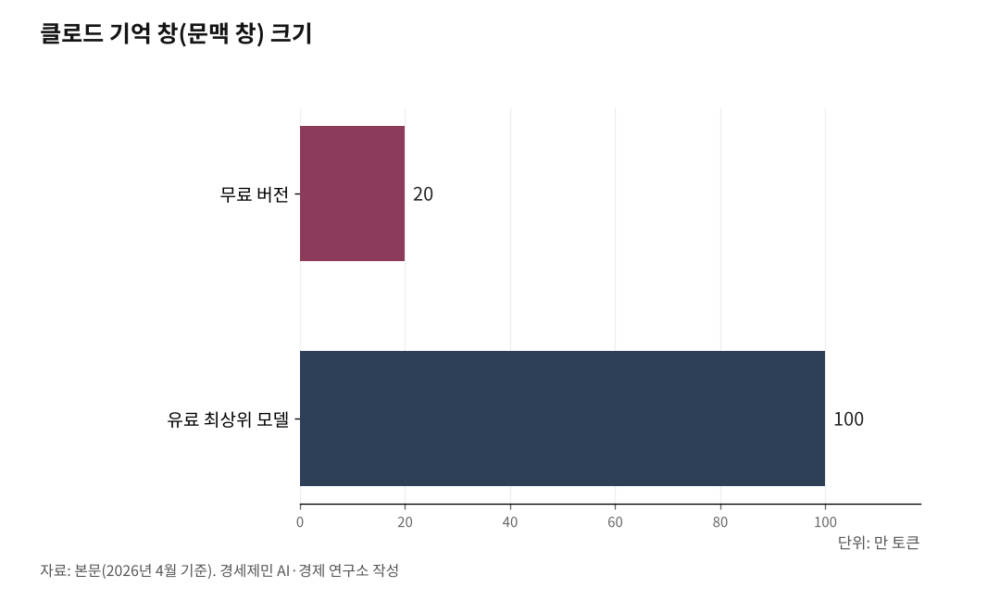

내 AI는 왜 자꾸 딴 소리를 할까 — 토큰과 메모리가 결정하는 AI 답변의 품질
AI가 똑똑해지는 원리는 통계학 회귀분석과 같다
무료와 유료의 차이는 결국 기억력(메모리)의 차이다
1. AI가 앞의 대화를 잊어버리는 이유 — 임시 저장 공간과 기억 창의 한계
클로드나 챗GPT 같은 AI와 긴 대화를 나누다 보면 갑자기 앞에서 한 말을 까먹고 엉뚱한 답을 내놓을 때가 있다. AI가 멍청해서가 아니다. 기억 공간이 꽉 찼기 때문이다.

AI는 대화할 때 앞에 나온 모든 단어 관계를 점수로 매겨서 임시 저장 공간에 쌓아둔다. 이 공간을 KV 캐시라고 한다. K는 키(Key, 단어 간 관련도), V는 밸류(Value, 전달할 정보)다. AI가 대화 내용을 기억하는 작업 책상이다. 문제는 이 책상 크기에 한계가 있다는 점이다. AI 업계에서는 이 한계를 '기억 창'(컨텍스트 윈도)이라고 부른다. 토큰은 AI가 글을 읽고 쓰는 기본 단위다. 토큰 1,000개가 한국어 약 500자에 해당한다. 클로드 무료 버전은 약 20만 토큰, 최신 유료 모델은 100만 토큰까지 담을 수 있다.
핵심은 AI가 매 답변마다 대화 전체를 처음부터 다시 읽는다는 사실이다. 사람처럼 앞부분을 기억하고 있는 게 아니라, 매번 전체를 다시 처리한다. 대화가 길어질수록 한 번의 답변에 드는 비용이 눈덩이처럼 불어난다.

2. 증거가 많을수록 정확해진다 — 베이지안 추론과 AI의 공통 원리
AI가 다음 단어를 고르는 과정은 통계학 베이지안 추론과 구조가 같다. 베이지안 추론은 18세기 영국 수학자 토머스 베이즈가 제안한 확률 이론이다. 핵심은 단순하다. 새로운 증거가 나올 때마다 판단을 고쳐나가면 점점 정확해진다.
회귀분석으로 비유하면 더 쉽다. "기온이 오르면 아이스크림 매출이 느는가?"를 분석할 때 데이터 10개로는 판단이 흔들리지만, 1,000개를 모으면 예측이 정밀해진다. 표본이 커질수록 모집단에 가까워지기 때문이다. 표본이 모집단 전체와 같아지면 오차는 0이 된다.
컬럼비아대 미스라 교수 연구팀은 2025년 12월, 현재 AI 핵심 구조인 트랜스포머에서 단어 간 관계를 파악하는 장치(어텐션)가 베이지안 추론을 기하학적으로 구현한다는 것을 실험으로 증명했다(아가르왈·달랄·미스라, 2025). AI에게 문맥(증거)을 많이 줄수록 답변이 정확해지는 것은 회귀분석에서 표본이 클수록 오차가 줄어드는 것과 같은 원리다.
3. 문맥 설계 기술이란 — 오픈북 시험을 치르는 AI
AI에게 "이 보고서 100쪽을 다 읽고, 내 과거 대화 기록도 참고해서 답해줘"라고 요구하는 방식을 문맥 설계 기술(컨텍스트 엔지니어링)이라고 한다. 명령어 작성 기술(프롬프트 엔지니어링)이 AI에게 '질문하는 기술'이라면, 문맥 설계 기술은 AI에게 '배경지식을 통째로 주입하는 설계 기술'이다.
과거에는 AI에게 쪽지 한 장만 주고 "이거 풀어봐"라고 했다. 지금은 전공 서적 100권, 동영상, 과거 기록을 책상 위에 다 쌓아주고 "이거 다 보고 답해"라고 한다. AI가 마치 오픈북 시험을 치르는 셈이다. 자료가 많을수록 AI는 맥락을 정확하게 파악하고, 거짓말(할루시네이션)도 줄어든다.
문제는 이 자료를 전부 임시 저장 공간(KV 캐시)에 올려야 한다는 점이다. 입력 자료의 양 × 동시 접속자 수 × 계산 정밀도가 곱셈으로 연결돼 있어서, 자료가 늘고 사용자가 늘면 메모리 수요가 기하급수적으로 폭발한다.
4. 클로드 무료 20만 토큰과 유료 100만 토큰 — 같은 AI, 다른 기억력
필자는 매달 클로드 맥스(월 200달러), 퍼플렉시티 프로(월 25달러), 제미나이 프로를 함께 쓴다. 이유는 분명하다. 무료 AI와 유료 AI의 답변 품질 차이가 크기 때문이다.
클로드를 예로 들면, 무료 버전은 기억 창이 20만 토큰이고 5시간당 메시지 수가 제한된다. 유료 최상위 모델 오퍼스(Opus) 4.6은 100만 토큰까지 담을 수 있고 사용량도 20배 넓다. 20만 토큰은 한국어 약 10만 자, 100만 토큰은 약 50만 자다.
베이지안 추론 관점에서 보면, 20만 토큰은 표본 100개로 회귀분석을 돌리는 것이고, 100만 토큰은 표본 500개로 돌리는 것이다. 같은 AI라도 기억할 수 있는 문맥(표본)이 5배 많으면 답변 정밀도가 확연히 달라진다. 무료 버전에서 AI가 앞의 대화를 잊어버리고 딴 소리를 하는 현상은 표본이 부족해서 오차가 커지는 것과 같다.
5. 알아서 일해주는 AI 비서 시대, 토큰이 곧 지능이다
알아서 일해주는 AI 비서(에이전트) 시대가 열리고 있다. 과거에는 모르는 것을 물어보면 답해주는 수준이었다면, 지금은 내 과거 기록과 취향까지 기억하고 스스로 판단해 업무를 대행하는 비서로 진화하고 있다. AI가 나를 제대로 이해하려면 내 데이터를 통째로 읽어야 하고, 그만큼 거대한 메모리가 필요하다.
같은 클로드라도 무료 20만 토큰과 유료 100만 토큰은 다른 AI나 마찬가지다. 토큰이 크면 기억하는 문맥이 많아지고, 문맥이 많으면 답변이 정밀해진다. 토큰이 작으면 문맥이 부족하고, 문맥이 부족하면 엉뚱한 답이 나온다.
인하대 해양AI융합센터 김갑봉 교수
[참고자료]
· Bayes, T. & Price, R., "An Essay towards Solving a Problem in the Doctrine of Chances", Philosophical Transactions of the Royal Society of London, 53, pp.370-418, 1763.
· Vaswani, A. et al., "Attention Is All You Need", NeurIPS, 2017. (arXiv:1706.03762)
· Agarwal, N., Dalal, S. R. & Misra, V., "The Bayesian Geometry of Transformer Attention", arXiv:2512.22471, 2025.12.27.
· Anthropic, "Context windows", Claude API Docs, 2026.
· Anthropic, "How do usage and length limits work?", Claude Help Center, 2026.
※ 이 기사는 인공지능을 활용해 작성했습니다.
관련기사
- [AI 메모리 전쟁②] 토큰 격차가 학력 격차가 된다
- [AI 메모리 전쟁③] 대학원생 92%가 AI를 쓰는데 진짜 공부는 어떻게
- [AI 메모리 전쟁④] AI 산업 병목이 GPU에서 메모리로 옮겨간다
- [AI 메모리 전쟁⑤] 개인투자자가 알아야 할 메모리 반도체의 현재와 미래
저작권자 © AI경세제민 무단전재 및 재배포, AI학습 및 활용 금지